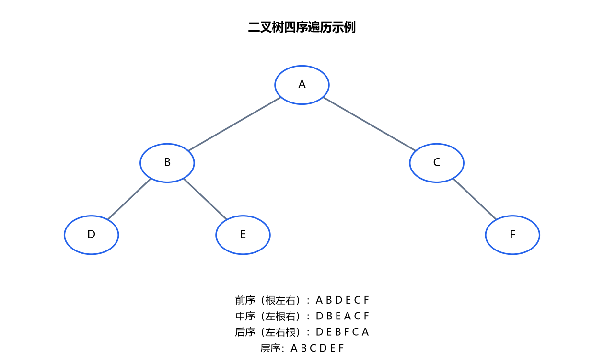
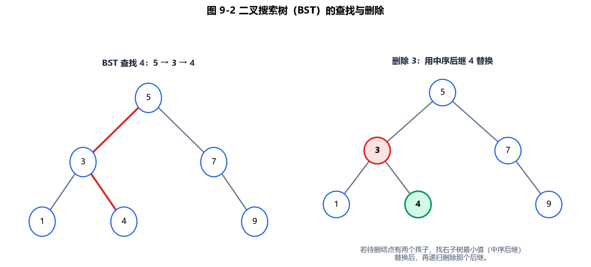
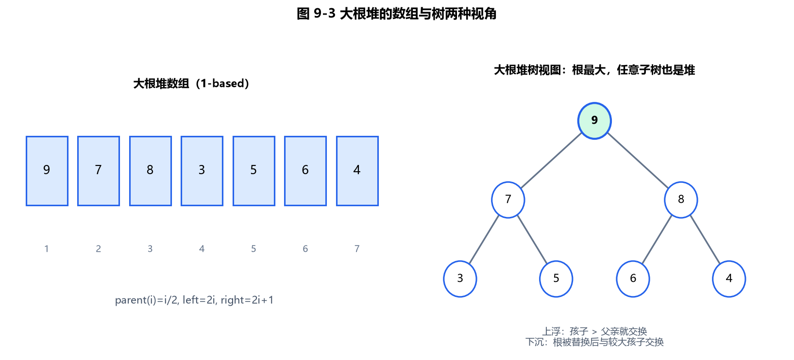
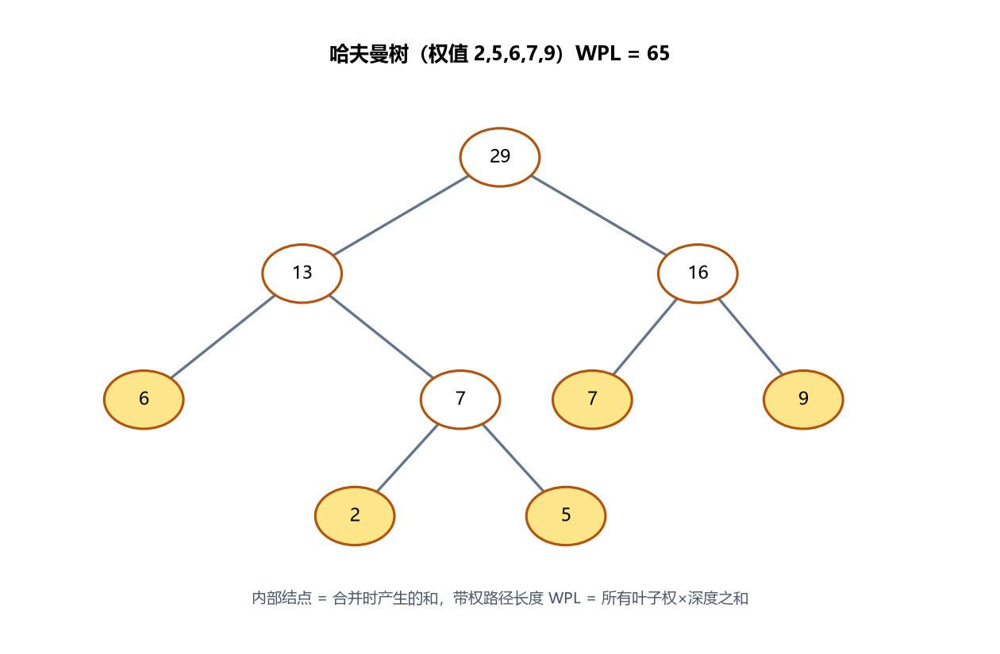
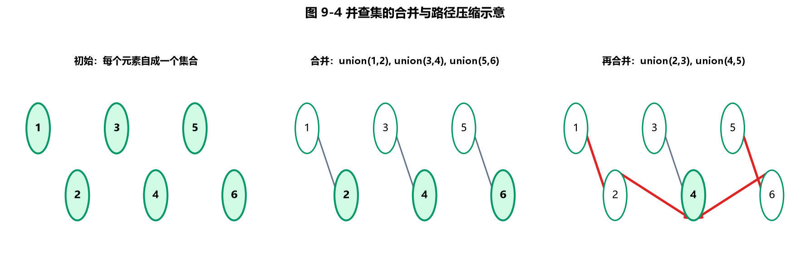
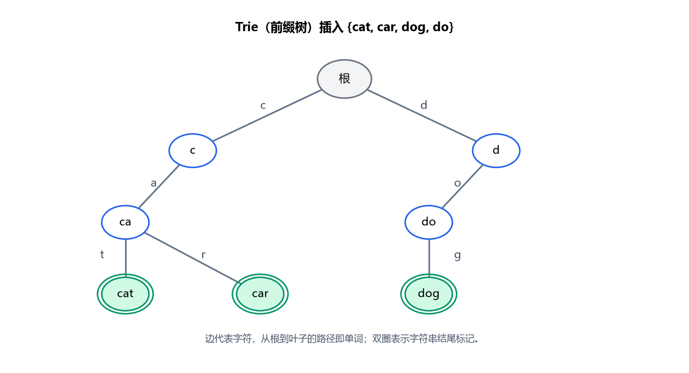
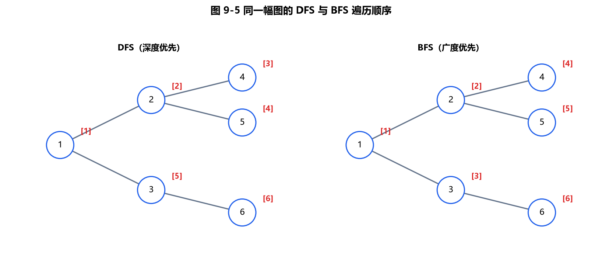
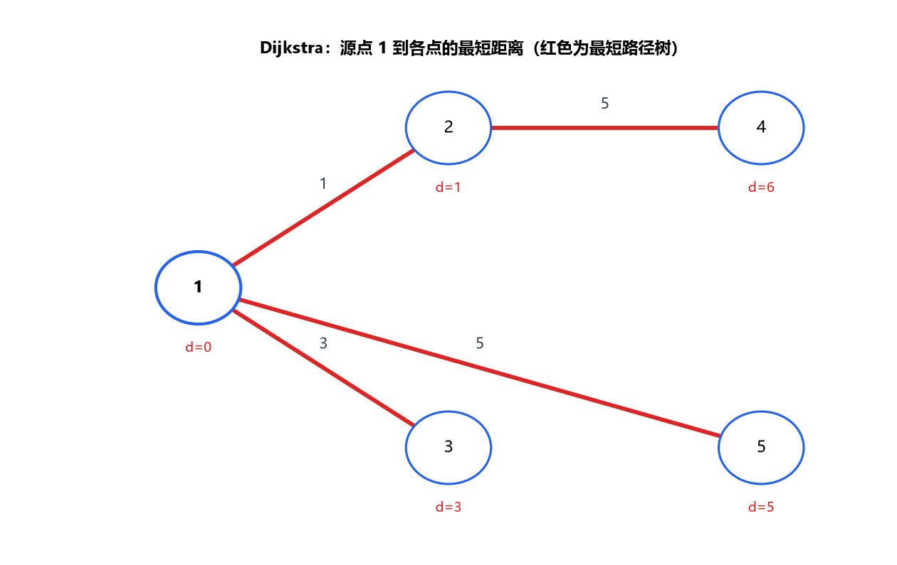
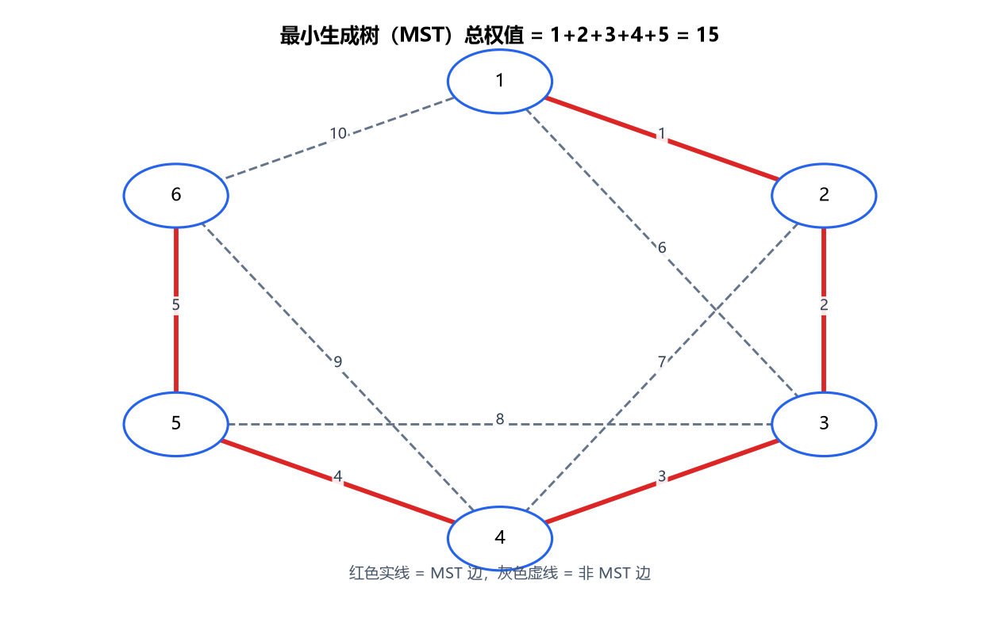
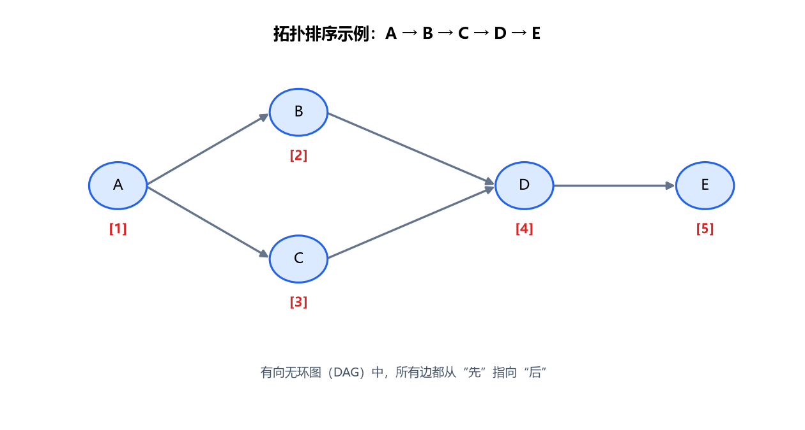

第9章 树和图
树和图是 CSP-S 复赛的骨架：线段树/平衡树/堆/并查集/Trie 都建立在"树"上；最短路、最小生成树、拓扑排序、强连通分量都建立在"图"上。本章把每个知识点写成可编译 C++17 示例，并把 6 道经典初赛选择题整理为随堂检测（每题附可展开解析）。
约定：复杂度用
O(n)/O(n²)/O(n log n)等 Unicode 上标写法；数组下标从 1 计（与教材一致），代码中用0计时会特别说明。
9.1 树与二叉树基础
树是 n 个结点的有限集，非空时有且仅有一个根，其余结点分成若干子树。二叉树每个结点最多两个子结点（左、右），且左右有序。
| 概念 | 说明 |
|---|---|
| 满二叉树 | 每层都满，深度 h 有 2ʰ − 1 个结点 |
| 完全二叉树 | 除最后一层外全满，最后一层从左到右排 |
| 深度/高度 | 根到最远叶子的边数（或结点数，注意定义） |
9.1.1 二叉树的性质（教学示例）
第 k 层最多 2ᵏ⁻¹ 个结点；深度 h 的二叉树最多 2ʰ − 1 个结点；n 个结点的完全二叉树深度为 ⌊log₂ n⌋ + 1；叶子数 = ⌈n/2⌉。
#include <iostream>
#include <cmath>
using namespace std;
int main() {
int h = 4;
cout << "深度 " << h << " 最多结点 = " << (int)pow(2, h) - 1 << "\n"; // 15
int n = 10;
cout << "完全二叉树 n=" << n << " 叶子数 = " << (n + 1) / 2 << "\n"; // 5
cout << "完全二叉树 n=" << n << " 深度 = " << (int)log2(n) + 1 << "\n"; // 4
return 0;
}
9.1.2 二叉树的存储（数组 / 链表）
顺序存储用"堆式下标"：结点 i 的左子为 2i、右子为 2i + 1（根从 1 计）。链式存储用左右指针，更灵活。
#include <iostream>
using namespace std;
// 链式结点
struct TNode { int v; TNode *l, *r; TNode(int x): v(x), l(nullptr), r(nullptr) {} };
int main() {
// 数组式（根下标 1）：a[1]=A, a[2]=B(左), a[3]=C(右)
int a[8] = {0, 1, 2, 3, 0, 0, 0, 0}; // 1-based
cout << "根=" << a[1] << " 左子=" << a[2] << " 右子=" << a[3] << "\n"; // 1 2 3
// 链式：A 的左 B、右 C
TNode* A = new TNode(1); A->l = new TNode(2); A->r = new TNode(3);
cout << "链式 根=" << A->v << " 左=" << A->l->v << " 右=" << A->r->v << "\n";
return 0;
}
9.1.3 四种遍历（前序 / 中序 / 后序 / 层序）
前序（根左右）、中序（左根右）、后序（左右根）用递归；层序用队列（BFS）。已知前序 + 中序或后序 + 中序可唯一确定一棵二叉树。

图 9-1：同一棵二叉树的前序、中序、后序、层序遍历结果。前序第一个元素是根，中序根左侧为左子树，可配合重建整棵树。
#include <iostream>
#include <queue>
using namespace std;
struct TNode { int v; TNode *l, *r; TNode(int x): v(x), l(nullptr), r(nullptr) {} };
void preorder(TNode* p) { if (!p) return; cout << p->v << " "; preorder(p->l); preorder(p->r); }
void inorder(TNode* p) { if (!p) return; inorder(p->l); cout << p->v << " "; inorder(p->r); }
void postorder(TNode* p) { if (!p) return; postorder(p->l); postorder(p->r); cout << p->v << " "; }
void levelorder(TNode* p) {
if (!p) return; queue<TNode*> q; q.push(p);
while (!q.empty()) { TNode* u = q.front(); q.pop(); cout << u->v << " ";
if (u->l) q.push(u->l); if (u->r) q.push(u->r); }
}
int main() {
// 建树：A(1) 左 B(2) 右 C(3)
TNode* A = new TNode(1); A->l = new TNode(2); A->r = new TNode(3);
cout << "前序: "; preorder(A); cout << "\n"; // 1 2 3
cout << "中序: "; inorder(A); cout << "\n"; // 2 1 3
cout << "后序: "; postorder(A); cout << "\n"; // 2 3 1
cout << "层序: "; levelorder(A);cout << "\n"; // 1 2 3
return 0;
}
9.2 二叉搜索树（BST）
BST 满足：左子树所有结点值 < 根值，右子树所有结点值 > 根值。中序遍历 BST 得到升序序列。查找/插入期望 O(log n)，最坏（退化成链）O(n)。

图 9-2：左图展示从根 5 查找 4 的路径；右图展示删除 3 时，用中序后继 4 替换并继续删除旧 4 的过程。
9.2.1 BST 插入与查找（教学示例）
#include <iostream>
using namespace std;
struct TNode { int v; TNode *l, *r; TNode(int x): v(x), l(nullptr), r(nullptr) {} };
TNode* insert(TNode* p, int x) {
if (!p) return new TNode(x);
if (x < p->v) p->l = insert(p->l, x);
else if (x > p->v) p->r = insert(p->r, x);
return p;
}
bool find(TNode* p, int x) {
if (!p) return false;
if (x == p->v) return true;
return x < p->v ? find(p->l, x) : find(p->r, x);
}
void inorder(TNode* p) { if (!p) return; inorder(p->l); cout << p->v << " "; inorder(p->r); }
int main() {
TNode* root = nullptr;
for (int x : {5, 3, 7, 1, 9}) root = insert(root, x);
inorder(root); cout << "\n"; // 1 3 5 7 9（升序）
cout << "查找 7? " << (find(root, 7) ? "是" : "否") << "\n"; // 是
return 0;
}
9.2.2 BST 删除（教学示例）
删除分三种：叶子直接删；单子结点用子代替；双子结点用中序后继（右子树最小）替换后删后继。
#include <iostream>
using namespace std;
struct TNode { int v; TNode *l, *r; TNode(int x): v(x), l(nullptr), r(nullptr) {} };
TNode* insert(TNode* p, int x) {
if (!p) return new TNode(x);
if (x < p->v) p->l = insert(p->l, x);
else if (x > p->v) p->r = insert(p->r, x);
return p;
}
TNode* minNode(TNode* p) { while (p->l) p = p->l; return p; }
TNode* erase(TNode* p, int x) {
if (!p) return nullptr;
if (x < p->v) p->l = erase(p->l, x);
else if (x > p->v) p->r = erase(p->r, x);
else { // 找到待删结点
if (!p->l) { TNode* t = p->r; delete p; return t; }
if (!p->r) { TNode* t = p->l; delete p; return t; }
TNode* suc = minNode(p->r); // 中序后继
p->v = suc->v; p->r = erase(p->r, suc->v);
}
return p;
}
void inorder(TNode* p) { if (!p) return; inorder(p->l); cout << p->v << " "; inorder(p->r); }
int main() {
TNode* root = nullptr;
for (int x : {5, 3, 7, 1, 9}) root = insert(root, x);
root = erase(root, 3);
inorder(root); cout << "\n"; // 1 5 7 9（删 3）
return 0;
}
9.2.3 由前序 + 中序重建二叉树（教学示例）
利用"前序首元素为根、中序中根左侧为左子树"递归切分（洛谷 P1030 求先序 为逆问题，思路一致）。
#include <iostream>
#include <string>
using namespace std;
// 由前序 pre 与中序 in（长度 n）建树并返回根；用区间 [ps,pe]/[is,ie]
int preIdx = 0;
void build(const string& pre, const string& in, int is, int ie) {
if (is > ie) return; // 空区间
char root = pre[preIdx++];
int mid = in.find(root);
build(pre, in, is, mid - 1); // 递归建左子树
build(pre, in, mid + 1, ie); // 递归建右子树
}
int main() {
string pre = "ABC", in = "BAC"; // 前序 A B C，中序 B A C
preIdx = 0; build(pre, in, 0, (int)in.size() - 1); // 重建结构：A 的左 B、右 C
cout << "重建完成（后序应为 B C A）\n";
return 0;
}
9.3 堆（优先队列）
堆是完全二叉树，用数组存储、满足"父结点权值 ≥/≤ 子结点"（大根堆/小根堆）。核心操作是上浮 siftUp 与下沉 siftDown，插入/取顶均为 O(log n)。STL 中 priority_queue 默认大根堆。

图 9-3：大根堆既是 1-based 数组，也是一棵完全二叉树；根最大，左右孩子下标满足 left=2i、right=2i+1。
9.3.1 数组实现大根堆（教学示例）
#include <iostream>
#include <vector>
using namespace std;
void siftDown(vector<int>& a, int i, int n) {
while (i * 2 <= n) {
int j = i * 2;
if (j + 1 <= n && a[j + 1] > a[j]) j++; // 取较大子结点
if (a[i] >= a[j]) break;
swap(a[i], a[j]); i = j;
}
}
void push(vector<int>& a, int x) { // a[0] 不用，1-based
a.push_back(x); int i = (int)a.size() - 1;
while (i > 1 && a[i] > a[i / 2]) { swap(a[i], a[i / 2]); i /= 2; } // 上浮
}
int main() {
vector<int> a = {0}; // 占位，1-based
for (int x : {4, 2, 8, 5, 1}) push(a, x);
for (int i = 1; i < (int)a.size(); ++i) cout << a[i] << " "; // 堆结构（根 8）
cout << "\n堆顶=" << a[1] << "\n"; // 8
return 0;
}
9.3.2 用堆求第 k 小（教学 / 洛谷 P1138 思路）
小根堆反复取顶可求序列第 k 小；也可直接 sort/nth_element。下面用 priority_queue（大根堆）维护"最小的 k 个"，堆顶即第 k 小。
#include <iostream>
#include <queue>
#include <vector>
using namespace std;
int kthSmallest(vector<int>& a, int k) {
priority_queue<int> pq; // 大根堆，维护最小的 k 个
for (int x : a) {
pq.push(x);
if ((int)pq.size() > k) pq.pop();
}
return pq.top();
}
int main() {
vector<int> a = {3, 1, 4, 1, 5, 9, 2, 6};
cout << "第 3 小 = " << kthSmallest(a, 3) << "\n"; // 2
return 0;
}
9.4 哈夫曼树与编码
哈夫曼树是带权路径长度（WPL）最小的二叉树，用于数据压缩。构造：每次取权值最小的两棵树合并，权值累加进总代价（WPL）。加权路径长度 = 所有合并代价之和。

图 9-4：权值 2、5、6、7、9 构成的哈夫曼树，内部结点为合并时产生的和，WPL = 7+13+16+29 = 65。
9.4.1 哈夫曼编码 WPL（教学示例）
#include <iostream>
#include <queue>
#include <vector>
using namespace std;
// 返回最小 WPL；权值集合 ws
int huffmanWPL(vector<int> ws) {
priority_queue<int, vector<int>, greater<int>> pq; // 小根堆
for (int w : ws) pq.push(w);
int wpl = 0;
while (pq.size() > 1) {
int a = pq.top(); pq.pop();
int b = pq.top(); pq.pop();
int s = a + b; wpl += s; pq.push(s);
}
return wpl;
}
int main() {
vector<int> ws = {5, 6, 2, 9, 7};
cout << "哈夫曼 WPL = " << huffmanWPL(ws) << "\n"; // 65
return 0;
}
9.5 并查集（Disjoint Set Union）
并查集高效维护"集合合并"与"查询所属集合"，配合路径压缩与按秩合并后，单次操作均摊 O(α(n))（反阿克曼，几乎常数）。是 Kruskal、连通块计数、判环的基石（洛谷 P3367 并查集模板）。

图 9-5：初始为 n 个单点集合；union 把根指向另一个根；路径压缩把查询路径上的所有点直接挂到根下。
9.5.1 并查集模板（路径压缩 + 按秩合并）
#include <iostream>
#include <vector>
using namespace std;
struct DSU {
vector<int> fa, rk;
DSU(int n) : fa(n + 1), rk(n + 1, 0) { for (int i = 1; i <= n; ++i) fa[i] = i; }
int find(int x) { return fa[x] == x ? x : fa[x] = find(fa[x]); } // 路径压缩
bool unite(int x, int y) {
x = find(x); y = find(y);
if (x == y) return false; // 已连通
if (rk[x] < rk[y]) swap(x, y); // 按秩合并
fa[y] = x; if (rk[x] == rk[y]) rk[x]++;
return true;
}
};
int main() {
DSU dsu(5);
dsu.unite(1, 2); dsu.unite(3, 4); dsu.unite(2, 3);
cout << "1 与 4 连通? " << (dsu.find(1) == dsu.find(4) ? "是" : "否") << "\n"; // 是
cout << "1 与 5 连通? " << (dsu.find(1) == dsu.find(5) ? "是" : "否") << "\n"; // 否
return 0;
}
9.5.2 应用：统计连通块数量（教学示例）
每成功 unite 一次，连通块数减一；初始 n 个块。
#include <iostream>
using namespace std;
int fa[1001];
int find(int x) { return fa[x] == x ? x : fa[x] = find(fa[x]); }
int main() {
int n = 6, m = 3; // 6 点，3 条边
for (int i = 1; i <= n; ++i) fa[i] = i;
int edges[3][2] = {{1,2},{2,3},{4,5}};
int blocks = n;
for (auto& e : edges) {
int x = find(e[0]), y = find(e[1]);
if (x != y) { fa[y] = x; --blocks; }
}
cout << "连通块数 = " << blocks << "\n"; // 3（{1,2,3},{4,5},{6}）
return 0;
}
9.6 Trie 字典树
Trie（前缀树）把字符串按字符逐层存成树，公共前缀共享路径，用于前缀查询 / 词频统计 / 字符串排序，插入/查找 O(|s|)（洛谷 P2580 是不是回文名字 思路）。

图 9-6：插入 cat, car, dog, do 后的 Trie；边代表字符，从根到双圈叶子的路径即一个完整单词，公共前缀 ca 被共享。
9.6.1 Trie 插入与查找（教学示例）
#include <iostream>
#include <string>
using namespace std;
const int S = 26;
struct TrieNode { TrieNode* ch[S]; bool end; TrieNode() : end(false) { for (int i = 0; i < S; ++i) ch[i] = nullptr; } };
void insert(TrieNode* p, const string& s) {
for (char c : s) {
int i = c - 'a';
if (!p->ch[i]) p->ch[i] = new TrieNode();
p = p->ch[i];
}
p->end = true;
}
bool find(TrieNode* p, const string& s) {
for (char c : s) { int i = c - 'a'; if (!p->ch[i]) return false; p = p->ch[i]; }
return p->end;
}
int main() {
TrieNode* root = new TrieNode();
insert(root, "abc"); insert(root, "abd");
cout << "查 abc? " << (find(root, "abc") ? "是" : "否") << "\n"; // 是
cout << "查 ab? " << (find(root, "ab") ? "是" : "否") << "\n"; // 否（非整词）
return 0;
}
9.7 图论基础
图 G = (V, E)，分有向图 / 无向图。存储方式：
| 存储 | 适用 | 空间 |
|---|---|---|
邻接矩阵 g[i][j] | 稠密图、含重边/自环、Floyd | O(V²) |
邻接表 vector<pair<int,int>> | 稀疏图、最短路/遍历 | O(V + E) |

图 9-7：从源点 1 出发，DFS 会一路深入到底再回溯，顺序为 1 2 4 5 3 6；BFS 按层扩散，顺序为 1 2 3 4 5 6。
9.7.1 图的两种存储（教学示例）
#include <iostream>
#include <vector>
using namespace std;
int main() {
const int N = 5;
// 邻接矩阵：无向边 (1,2,w=3)
int g[N + 1][N + 1] = {0};
g[1][2] = g[2][1] = 3;
cout << "矩阵 g[1][2] = " << g[1][2] << "\n"; // 3
// 邻接表：存 (到达点, 边权)
vector<pair<int,int>> adj[N + 1];
adj[1].push_back({2, 3}); adj[2].push_back({1, 3});
cout << "邻接表 1 的第一条边 -> " << adj[1][0].first << " 权 " << adj[1][0].second << "\n"; // 2 权 3
return 0;
}
9.7.2 深度优先遍历 DFS（教学示例）
DFS 沿一条路走到底再回溯，用于连通分量、拓扑序、回溯搜索。
#include <iostream>
#include <vector>
using namespace std;
vector<int> adj[6]; bool vis[6];
void dfs(int u) {
vis[u] = true; cout << u << " ";
for (int v : adj[u]) if (!vis[v]) dfs(v);
}
int main() {
adj[1] = {2, 3}; adj[2] = {4}; adj[3] = {4}; // 无向
adj[4] = {1, 2, 3};
dfs(1); cout << "\n"; // 一种 DFS 序：1 2 4 3
return 0;
}
9.7.3 广度优先遍历 BFS（教学示例）
BFS 按层扩展，第一次到达即最短路（边权均为 1 时）。
#include <iostream>
#include <vector>
#include <queue>
using namespace std;
vector<int> adj[6]; int dist[6];
void bfs(int s) {
for (int i = 0; i < 6; ++i) dist[i] = -1;
queue<int> q; q.push(s); dist[s] = 0;
while (!q.empty()) {
int u = q.front(); q.pop();
for (int v : adj[u]) if (dist[v] == -1) { dist[v] = dist[u] + 1; q.push(v); }
}
}
int main() {
adj[1] = {2, 3}; adj[2] = {4}; adj[3] = {4}; adj[4] = {1, 2, 3};
bfs(1);
cout << "1->4 最短距离 = " << dist[4] << "\n"; // 2
return 0;
}
9.8 最短路径
| 算法 | 适用 | 复杂度 |
|---|---|---|
| Dijkstra（堆优化） | 非负权单源 | O((V + E) log V) |
| Bellman-Ford / SPFA | 可负权、判负环 | O(VE) / 期望 O(E) |
| Floyd | 多源、传递闭包 | O(V³) |
9.8.1 Dijkstra 堆优化（洛谷 P3371 / P4779 思路）
用优先队列每次取距离最小的点松弛邻接点；边权必须非负。

图 9-8：源点 1 到各点的最短距离；红色边构成最短路径树，d[2]=1、d[3]=3、d[4]=6、d[5]=5。
#include <iostream>
#include <vector>
#include <queue>
using namespace std;
const int INF = 1e9;
int main() {
int n = 5;
vector<vector<pair<int,int>>> adj(n + 1); // (to, w)
adj[1] = {{2,1},{3,4}}; adj[2] = {{3,2},{4,7}};
adj[3] = {{4,3},{5,2}}; adj[4] = {{5,5}};
vector<int> d(n + 1, INF); d[1] = 0;
priority_queue<pair<int,int>, vector<pair<int,int>>, greater<pair<int,int>>> pq;
pq.push({0, 1});
while (!pq.empty()) {
auto [du, u] = pq.top(); pq.pop();
if (du > d[u]) continue; // 过期堆顶
for (auto [v, w] : adj[u])
if (d[u] + w < d[v]) { d[v] = d[u] + w; pq.push({d[v], v}); }
}
for (int i = 1; i <= n; ++i) cout << d[i] << " "; // 0 1 3 6 5
cout << "\n";
return 0;
}
9.8.2 Floyd 多源最短路（教学示例）
动态规划：以 k 为中转点，尝试松弛 i→j。O(V³)，适合稠密小图。
#include <iostream>
#include <vector>
using namespace std;
int main() {
const int N = 4, INF = 1e9;
vector<vector<int>> d(N + 1, vector<int>(N + 1, INF));
for (int i = 1; i <= N; ++i) d[i][i] = 0;
// 边：1-2(3) 2-3(4) 3-4(5) 1-3(8) 2-4(9)
d[1][2] = 3; d[2][3] = 4; d[3][4] = 5; d[1][3] = 8; d[2][4] = 9;
for (int k = 1; k <= N; ++k)
for (int i = 1; i <= N; ++i)
for (int j = 1; j <= N; ++j)
if (d[i][k] + d[k][j] < d[i][j]) d[i][j] = d[i][k] + d[k][j];
cout << "1->4 最短路 = " << d[1][4] << "\n"; // 12（1-2-3-4）
return 0;
}
9.8.3 Bellman-Ford / SPFA 判负环（洛谷 P3385 思路）
对边松弛 V − 1 轮；若还能继续松弛说明存在负权环。
#include <iostream>
#include <vector>
using namespace std;
struct Edge { int u, v, w; };
const int INF = 1e9;
int main() {
int n = 4;
vector<Edge> e = {{1,2,3},{2,3,-1},{3,4,2},{4,2,-4}}; // 含环 2-3-4-2 权 -3
vector<int> d(n + 1, INF); d[1] = 0;
bool neg = false;
for (int i = 1; i <= n; ++i) { // n 轮（多一轮判负环）
bool upd = false;
for (auto& ed : e) {
if (d[ed.u] != INF && d[ed.u] + ed.w < d[ed.v]) {
d[ed.v] = (i == n) ? d[ed.v] : d[ed.u] + ed.w; // 第 n 轮仍松弛→负环
if (i == n) neg = true; upd = true;
}
}
if (!upd) break;
}
cout << "存在负权环? " << (neg ? "是" : "否") << "\n"; // 是
return 0;
}
9.9 最小生成树（MST）
在连通带权无向图中选 V − 1 条边连通所有点且总权最小。

图 9-9：红色实线组成 MST，总权值 1+2+3+4+5 = 15；灰色虚线为不在 MST 中的边。Kruskal 按边权从小到大用并查集判环，Prim 从某点出发每次连最近未访问点。
9.9.1 Kruskal（并查集，洛谷 P3366 思路）
按边权升序取边，用并查集判是否成环（不成环才加入）。复杂度 O(E log E)。
#include <iostream>
#include <vector>
#include <algorithm>
using namespace std;
struct Edge { int u, v, w; bool operator<(const Edge& o) const { return w < o.w; } };
int fa[1001];
int find(int x) { return fa[x] == x ? x : fa[x] = find(fa[x]); }
int main() {
vector<Edge> e = {
{1,2,4},{1,3,2},{1,4,3},{2,3,3},{2,5,6},
{3,4,1},{3,5,4},{4,6,5},{5,6,7}
};
int n = 6; for (int i = 1; i <= n; ++i) fa[i] = i;
sort(e.begin(), e.end());
int mst = 0, cnt = 0;
for (auto& ed : e) {
int x = find(ed.u), y = find(ed.v);
if (x != y) { fa[y] = x; mst += ed.w; ++cnt; }
}
cout << "MST 总权 = " << mst << " 边数 = " << cnt << "\n"; // 15, 5
return 0;
}
9.9.2 Prim（堆优化，教学示例）
从某点出发，每次把"已选集合到未选集合"的最小边加入。用优先队列实现，复杂度 O((V + E) log V)，适合稠密图。
#include <iostream>
#include <vector>
#include <queue>
using namespace std;
const int INF = 1e9;
int main() {
int n = 6;
vector<vector<pair<int,int>>> adj(n + 1); // (to, w)
auto add = [&](int u, int v, int w){ adj[u].push_back({v,w}); adj[v].push_back({u,w}); };
add(1,2,4); add(1,3,2); add(1,4,3); add(2,3,3); add(2,5,6);
add(3,4,1); add(3,5,4); add(4,6,5); add(5,6,7);
vector<int> d(n + 1, INF); d[1] = 0; vector<bool> vis(n + 1, false);
priority_queue<pair<int,int>, vector<pair<int,int>>, greater<pair<int,int>>> pq;
pq.push({0, 1}); int mst = 0;
while (!pq.empty()) {
auto [du, u] = pq.top(); pq.pop();
if (vis[u]) continue; vis[u] = true; mst += du;
for (auto [v, w] : adj[u]) if (!vis[v] && w < d[v]) { d[v] = w; pq.push({w, v}); }
}
cout << "Prim MST 总权 = " << mst << "\n"; // 15
return 0;
}
9.10 拓扑排序
对有向无环图（DAG）排成"所有边从前指向后"的线性序列，用于任务依赖 / 编译顺序。用 Kahn 算法：不断取入度为 0 的点输出并删边；若最后输出点数 < V 则有环。

图 9-10：DAG 中所有有向边都从先指向后的任务；一个合法拓扑序为 A → B → C → D → E（B 与 C 可互换）。
9.10.1 拓扑排序 Kahn 算法（洛谷 P1113 思路）
#include <iostream>
#include <vector>
#include <queue>
using namespace std;
int main() {
int n = 4;
vector<int> adj[5]; int indeg[5] = {0};
// 依赖：A(1)->B(2), A(1)->C(3), B(2)->D(4), C(3)->D(4)
adj[1] = {2, 3}; adj[2] = {4}; adj[3] = {4};
for (int u = 1; u <= n; ++u) for (int v : adj[u]) indeg[v]++;
queue<int> q;
for (int i = 1; i <= n; ++i) if (indeg[i] == 0) q.push(i);
vector<int> topo;
while (!q.empty()) {
int u = q.front(); q.pop(); topo.push_back(u);
for (int v : adj[u]) if (--indeg[v] == 0) q.push(v);
}
for (int x : topo) cout << x << " "; // 一种拓扑序：1 2 3 4
cout << "\n";
return 0;
}
9.11 本章小结
- 二叉树：满/完全二叉树性质（叶子
= ⌈n/2⌉、深度⌊log₂ n⌋ + 1）；存储用数组（堆式2i/2i+1）或链表；四序遍历（前/中/后递归 + 层序 BFS），前+中序可重建。 - BST：左
<根<右，中序升序；插入/查找期望O(log n)，删除分叶子/单子/双子（双子用中序后继）。 - 堆：完全二叉树数组存，大/小根堆用上浮/下沉；
priority_queue默认大根堆；应用：第 k 小、合并果子（P1090）、哈夫曼。 - 哈夫曼树：贪心合并最小两权，WPL = 合并代价之和。
- 并查集：路径压缩 + 按秩合并 → 均摊
O(α(n))；用于连通块、Kruskal 判环。 - Trie：字符分层共享前缀，插入/查找
O(|s|)，用于前缀/字典。 - 图存储：稠密用邻接矩阵，稀疏用邻接表（
vector<pair<int,int>>）。 - 最短路：Dijkstra（非负权、堆优化
O((V+E)log V)）、Floyd（多源O(V³)）、Bellman-Ford/SPFA（可负权、判负环）。 - MST：Kruskal（边排序 + 并查集
O(E log E)）、Prim（堆优化，稠密图友好）。 - 拓扑排序：Kahn（入度队列），输出点
< V则有环。
随堂检测（CSP-S 初赛风格）
-
（单选）一棵有 2014 个结点的完全二叉树，其叶子结点个数为（ ）
- A. 1006
- B. 1007
- C. 1008
- D. 1009
参考答案
B. 1007。
解析（考点）：完全二叉树性质：叶子结点数
= ⌈n/2⌉（或n − ⌊n/2⌋）。n = 2014时⌈2014/2⌉ = 1007；也可用"度为 1 的结点个数= n mod 2"推出：总结点n = n₀ + n₁ + n₂，且n₀ = n₂ + 1、n₁ ∈ {0,1}，解得n₀ = 1007。 -
（单选）某二叉树的前序遍历为
A B C、中序遍历为B A C，则其后序遍历为（ ）- A.
B C A - B.
C B A - C.
A B C - D.
B A C
参考答案
A.
B C A。解析（考点）：前序首元素
A为根；中序B A C说明A的左子树是B、右子树是C；后序为"左、右、根" →B C A。可画图验证：A 的左孩子 B、右孩子 C。 - A.
-
（单选）对权值集合
{5, 6, 2, 9, 7}构造哈夫曼树，其最小带权路径长度 WPL 为（ ）- A. 60
- B. 65
- C. 70
- D. 75
参考答案
B. 65。
解析（考点）：贪心合并最小两权：
2+5=7（代价 7）→ 集合{6,7,7,9}；6+7=13（代价 13）→{7,9,13}；7+9=16（代价 16）→{13,16}；13+16=29（代价 29）。WPL = 合并代价之和 =7+13+16+29 = 65。 -
（单选）关于并查集，下列说法正确的是（ ）
- A. 单次
find最坏O(n)，无法优化 - B. 路径压缩后，单次操作均摊接近常数
O(α(n)) - C. 只能用于树，不能用于图
- D. 合并时必须按值大小排序
参考答案
B. 路径压缩后，单次操作均摊接近常数
O(α(n))。解析（考点）：并查集配合路径压缩与按秩/按大小合并，单次
find/union均摊O(α(n))（α为反阿克曼函数，增长极慢，实际视为常数）；广泛用于连通块、Kruskal 判环等图的场景（C 错）。 - A. 单次
-
（单选）Dijkstra 单源最短路径算法适用的条件是（ ）
- A. 边权可以为负
- B. 边权必须非负
- C. 图必须为无向图
- D. 图中不能有环
参考答案
B. 边权必须非负。
解析（考点）：Dijkstra 依赖"每次取出的距离最小点已确定最短路"，若边权为负会破坏该性质；负权最短路应使用 Bellman-Ford / SPFA。图中可以有环（D 错），也可有向（C 错）。
-
（单选）Kruskal 算法求最小生成树时，选边策略是（ ）
- A. 从权值最大的边开始，不形成环就加入
- B. 从权值最小的边开始，不形成环就加入
- C. 随机选择边
- D. 按顶点顺序依次选边
参考答案
B. 从权值最小的边开始，不形成环就加入。
解析（考点）：Kruskal 贪心：将所有边按权值升序排序，依次尝试加入，用并查集判断加入后是否成环（连通则跳过），直到选满
V−1条边。权值最小的边优先保证了总权最小。